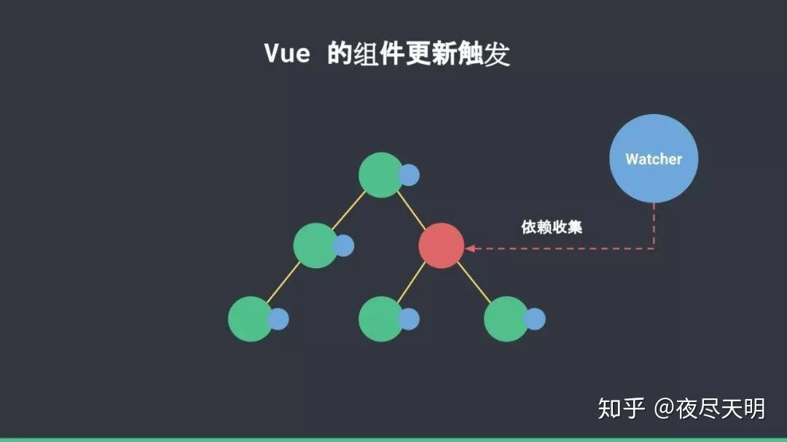

传递给组件属性的是一个wrapper value，可以被收集为依赖，对于setup返回的非响应式数据，可在实例化组件时将其设置为wrapper value以便收集为依赖，与2.x相比，一个响应式数据可以被一个组件及其子组件分别依赖，数据更新时，两个组件都会收到更新通知，因此在diff时可以避开组件的diff。
在以2.x的机制思考这个问题时，我想到的解决方案是将属性作为一个绑定了上下文的函数（箭头函数或bind(this)）来传递，在函数中引用属性传递方的状态以此来达到让子组件收集到此依赖的目的。